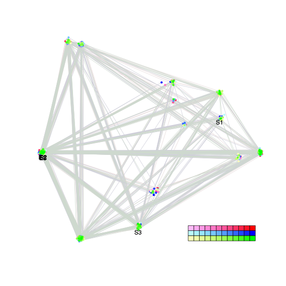
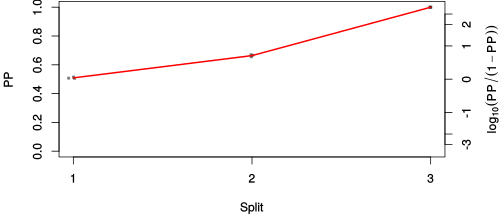
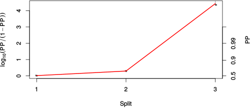

| chain # | burnin | subsample | Iterations (remaining) | command line | subdirectory | directory |
|---|---|---|---|---|---|---|
| 1 | 10000 | 1 | 90000 | bali-phy cat_E6_E7_AA_red3_BetaGamma.fas -s 63325 -n BetaGamma_c1 | BetaGamma_c1-1 | /DATA/work/ONCOGENEVOL/database/trees/Bali-Phy/red3/cat_E6_E7 |
| 2 | 10000 | 1 | 90000 | bali-phy cat_E6_E7_AA_red3_BetaGamma.fas -s 89431 -n BetaGamma_c2 | BetaGamma_c2-1 | /DATA/work/ONCOGENEVOL/database/trees/Bali-Phy/red3/cat_E6_E7 |
| 3 | 10000 | 1 | 90000 | bali-phy cat_E6_E7_AA_red3_BetaGamma.fas -s 56123 -n BetaGamma_c3 | BetaGamma_c3-1 | /DATA/work/ONCOGENEVOL/database/trees/Bali-Phy/red3/cat_E6_E7 |
| P(data|M) = -3524.302 +- 0.225 | Complete sample: 16 topologies | 95% Bayesian credible interval: 14 topologies |
Phylogeny Distribution

| Partition support: Summary |
| Partition support graph: SVG |
{kind=link}
| 50% consensus | Newick (+PP) | SVG | |||||
| 66% consensus | Newick (+PP) | SVG | |||||
| 80% consensus | Newick (+PP) | SVG | |||||
| 90% consensus | Newick (+PP) | SVG | |||||
| 95% consensus | Newick (+PP) | SVG | |||||
| 99% consensus | Newick (+PP) | SVG | |||||
| 100% consensus | Newick (+PP) | SVG | |||||
| MAP | Newick (+PP) | SVG | |||||
| greedy | Newick (+PP) | SVG |
{kind=link}
{kind=link}
{kind=link}
{kind=link}
{kind=link}
{kind=link}
{kind=link}
{kind=link}
Alignment Distribution
Partition 1
| Diff | Min. %identity | # Sites | Constant | Informative | ||||
|---|---|---|---|---|---|---|---|---|
| Initial | FASTA | HTML | Diff | 3.25% | 277 | 1 (0.361%) | 51 (18.4%) | |
| Best (WPD) | FASTA | HTML | AU | 21.7% | 311 | 28 (9%) | 96 (30.9%) |
Mixing
{kind=link}
{kind=link}
| burnin (scalar) | ESS (scalar) | ESS (partition) | ASDSF | MSDSF | PSRF-CI80% | PSRF-RCF |
|---|---|---|---|---|---|---|
| 616 | 6690 | 21449.476 | 0.003 | 0.007 | 1 | 1.009 |
Projection of RF distances for the first 3 chains3D | Variation of split PPs across chains |
Scalar variables
| Statistic | Median | 95% BCI | ACT | ESS | burnin | PSRF-CI80% | PSRF-RCF |
|---|---|---|---|---|---|---|---|
| prior | -248 | (-290.9, -213.3) | 31.69 | 8519 | 426 | 1 | 1.001 |
| prior_A1 | -226.8 | (-268.5, -194.2) | 13.16 | 20511 | 138 | 1 | 0.9988 |
| likelihood | -3505 | (-3525, -3484) | 26.6 | 10150 | 322 | 0.9999 | 0.9966 |
| logp | -3754 | (-3788, -3725) | 33.53 | 8052 | 212 | 1 | 1.004 |
| Heat.beta | 1 | ||||||
| Scale1 | 3.669 | (1.576, 6.937) | 1 | 270003 | 144 | 0.9997 | 0.9996 |
| S1.F.pi.A | 0.05085 | (0.03809, 0.0643) | 8.066 | 33474 | 560 | 1 | 1.007 |
| S1.F.pi.R | 0.06728 | (0.05198, 0.08372) | 7.913 | 34121 | 152 | 1 | 1 |
| S1.F.pi.N | 0.0382 | (0.02754, 0.04949) | 8.242 | 32758 | 299 | 1 | 0.9977 |
| S1.F.pi.D | 0.05028 | (0.03715, 0.06439) | 8.044 | 33564 | 525 | 1 | 1.005 |
| S1.F.pi.C | 0.06747 | (0.05019, 0.08676) | 8.195 | 32947 | 412 | 0.9998 | 0.9961 |
| S1.F.pi.Q | 0.04416 | (0.03329, 0.05581) | 8.165 | 33066 | 401 | 1 | 1.001 |
| S1.F.pi.E | 0.0703 | (0.05516, 0.08669) | 9.375 | 28799 | 361 | 0.9994 | 0.9964 |
| S1.F.pi.G | 0.05766 | (0.04195, 0.0755) | 8.602 | 31388 | 466 | 1 | 1.002 |
| S1.F.pi.H | 0.02548 | (0.01644, 0.03592) | 8.493 | 31791 | 255 | 0.9997 | 1.004 |
| S1.F.pi.I | 0.05394 | (0.04109, 0.06766) | 8.352 | 32328 | 536 | 0.9996 | 0.9982 |
| S1.F.pi.L | 0.1134 | (0.09311, 0.135) | 7.807 | 34586 | 197 | 1 | 1.001 |
| S1.F.pi.K | 0.03906 | (0.02818, 0.05077) | 7.991 | 33789 | 395 | 1 | 0.9968 |
| S1.F.pi.M | 0.009221 | (0.004561, 0.01495) | 8.234 | 32790 | 320 | 1 | 1.006 |
| S1.F.pi.F | 0.05942 | (0.04452, 0.07521) | 8.142 | 33159 | 355 | 1 | 0.9972 |
| S1.F.pi.P | 0.04538 | (0.03148, 0.06032) | 8.277 | 32619 | 245 | 1 | 1 |
| S1.F.pi.S | 0.05398 | (0.04128, 0.06802) | 8.323 | 32440 | 458 | 1 | 0.9996 |
| S1.F.pi.T | 0.04125 | (0.02998, 0.05382) | 7.903 | 34162 | 531 | 1 | 0.9987 |
| S1.F.pi.W | 0.009398 | (0.003708, 0.01657) | 8.038 | 33589 | 208 | 0.9998 | 1.009 |
| S1.F.pi.Y | 0.03596 | (0.0244, 0.04856) | 7.938 | 34015 | 457 | 0.9999 | 0.9992 |
| S1.F.pi.V | 0.06124 | (0.04788, 0.07551) | 8.025 | 33644 | 616 | 1 | 0.994 |
| I1.RS07.meanIndelLengthMinus1 | 2.683 | (1.525, 4.295) | 8.077 | 33429 | 91 | 1 | 0.9993 |
| I1.RS07.logLambda | -4.298 | (-4.75, -3.891) | 3.635 | 74285 | 61 | 0.9997 | 1.002 |
| |A1| | 310 | (296, 324) | 40.36 | 6690 | 305 | 0.9474 | 0.9952 |
| #indels1 | 28 | (24, 35) | 12.82 | 21061 | 138 | 0.875 | 0.9992 |
| |indels1| | 103 | (85, 125) | 12.22 | 22102 | 393 | 0.963 | 0.9987 |
| #substs1 | 637 | (620, 650) | 27.69 | 9750 | 231 | 0.95 | 0.9982 |
| Scale1*|T| | 4.622 | (4.183, 5.077) | 2.137 | 126328 | 143 | 0.9998 | 1.002 |
| |A| | 310 | (296, 324) | 40.36 | 6690 | 305 | 0.9474 | 0.9952 |
| #indels | 28 | (24, 35) | 12.82 | 21061 | 138 | 0.875 | 0.9992 |
| |indels| | 103 | (85, 125) | 12.22 | 22102 | 393 | 0.963 | 0.9987 |
| #substs | 637 | (620, 650) | 27.69 | 9750 | 231 | 0.95 | 0.9982 |
| |T| | 1.26 | (0.5081, 2.263) | 1.01 | 267251 | 170 | 1 | 0.9993 |